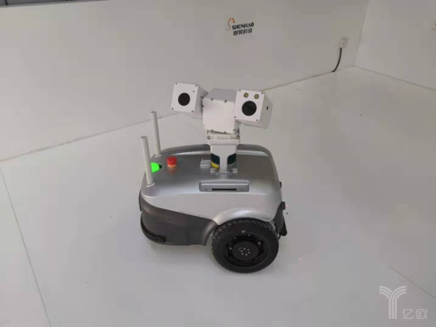
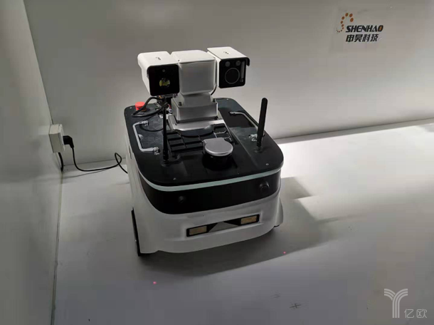

聚焦智能电网监测，申昊科技电力巡检机器人“C位出道”
发布时间：2019-09-05 大中小
8月20－25日，由北京市政府、工业与信息化部、中国科学技术协会指导，中国电子学会承办的2019世界机器人大会在北京市亦创国际会展中心举办。围绕“智能新生态，开放新时代”主题，大会以论坛、博览会、大赛等形式展开，通过交流研讨、成果展示、创新探索，促进机器人产业协同创新和发展。
其中，博览会展出了包括工业机器人、服务机器人、特种机器人等180余家创新企业，700多款新锐产品，全面展示了中国机器人领域的新技术、新产品及新应用。亿欧新制造记者于22－23日到现场对部分机器人新品及企业进行了采访。
“室外轮式巡检机器人”C位出道
在特种机器人展区，记者发现一处机器人演示画风简洁的机器人，在喧闹的展馆一下就吸引了笔者注意力。近距离了解，这其实是一套“智能电网电力巡检监测设备”。
亿欧新制造记者了解到，该演示中的智能电力巡检机器人来自杭州申昊科技股份有限公司，笔者带着对三款产品的好奇，采访了其公司副总经理兼董事长助理熊俊杰先生。
事实上，申昊科技成立于2002年，自2007年开始介入智能电网监测设备领域，主要为电力系统提供电力设备的智能化监测产品，应用领域主要为变电、输电及配电环节，以提升电网的自动化、智能化水平。目前，核心产品包括室外轮式巡检机器人、室内轮式巡检机器人及挂轨式巡检机器人。
通常情况下，在变电站等室外场景，针对不同高度和位置的表计读数、开关位置、设备温度等状态均需进行定期检查。而在人工巡检过程中，存在巡检任务重、巡检效率低、巡检人力成本高、漏检率高等问题。
“室外轮式巡检机器人可以很好的解决以上问题。它综合运用无轨导航、图像智能识别与分析、多传感器融合等技术，可代替人工完成室外特定环境下的设备检测工作。并且室外的场景一般比较大，我们的激光雷达会采用一百米以上的范围”在展会现场，熊俊杰向笔者介绍。
目前，室外轮式机器人可以在室外复杂道路环境实现无轨导航，并通过可见光热成像视频监控，检测目标物状态；通过红外测温功能，测量目标设备温度环境温湿度检测，并进行数据分析与故障报警。此外，这款机器人还能实现自主充电，交互式对讲，多种巡检方式配合和可定制化。
（室外轮式巡检机器人）
据了解，该款机器人可广泛应用于电力变电站、铁路牵引变电所、降压站等多种室外设备检测场景，有效降低巡检成本和劳动强度，提高巡检效率和质量，助力实现状态全面感知、信息高效处理、应用便捷灵活的泛在电力物联网构想。
任务重、效率低的室内巡检，特定巡检机器人来帮忙
就现阶段而言，室内设备巡检中普遍存在巡检任务重、巡检效率低、巡检人力成本高、漏检率高等问题问题，并且，这个任务的场景相对固定单一。因此，规模化的机器人操作不失为该场景的一个有效方案。
“室内轮式巡检机器人可广泛应用于不同行业中的配电室、继保室等多种室内环境。”熊俊杰表示。
事实上，这些广泛应用场景的实现，是以电力物联网的数据采集为基础。具体来说，采用无轨导航与自主建图、图像智能识别与分析、多传感器融合等技术，替代人工对室内柜体等设备进行状态检测，并通过后台对巡检数据进行对比和分析，提前发现设备隐患和故障征兆，保障设备稳定运行，有效提升巡检工作质量。
“相比于室外巡检机器人，室内因为场景较小，因此一般采用30米范围的激光雷达，因此价格也会相对便宜一些。”熊俊杰告诉笔者。
（室外轮式巡检机器人）
“飞檐走壁”的挂轨式巡检机器人
一种普遍现象是，在设备日常人工巡检过程中，普遍存在关于表计读数、开关位置、设备温度、柜体局部放电等状态检测的繁重工作。巡检效率低、巡检人力成本高并且漏检情况严重。
“挂轨式巡检机器人天生就是为这个场景设计的。采用轨道悬挂、云台升降、多传感器检测等方式，可在室内或隧道等环境替代人工完成全天候监控和巡检任务，在节省大量人力成本的同时，提高巡检效率和力度，并可将巡检数据结构化存储，通过数据分析进行预测性防护，保障设备的安全可靠运行。可广泛应用于不同行业中的配电室、继保室、电缆隧道等多种环境。”熊俊杰强调。
事实上，电力设备状态监测行业属于近年来发展起来的新兴行业，随着智能电网建设的全面启动以及在线监测设备应用的全面推行，电力设备状态监测行业逐步进入成长阶段。
此外，输变电监测设备（含智能巡检机器人）、配电及自动化控制设备的功能契合了智能电网建设以提升电网管理自动化、智能化水平这一目标，在智能电网大发展的背景下步入了快速发展的阶段。
在智能电网建设布局中，积极利用机器人等现代技术手段发展智能作业，提升电力行业的作业效率，提升供电可靠性，降低成本，已成为智能电网建设的重要组成部分。
申昊科技以往的突破创新，曾给业界带来惊喜，此次展出的几款产品，或许将给智慧电力行业带来更多发展。巡检机器人这样的产品未来能否在市场上快速铺开，当然还需要市场的检验，但这些技术创新下的新技术和新产品，在任何时候都值得我们期待。